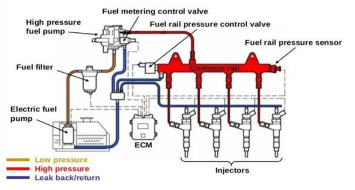
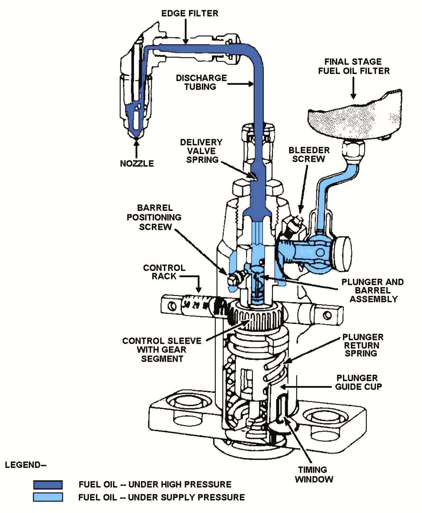
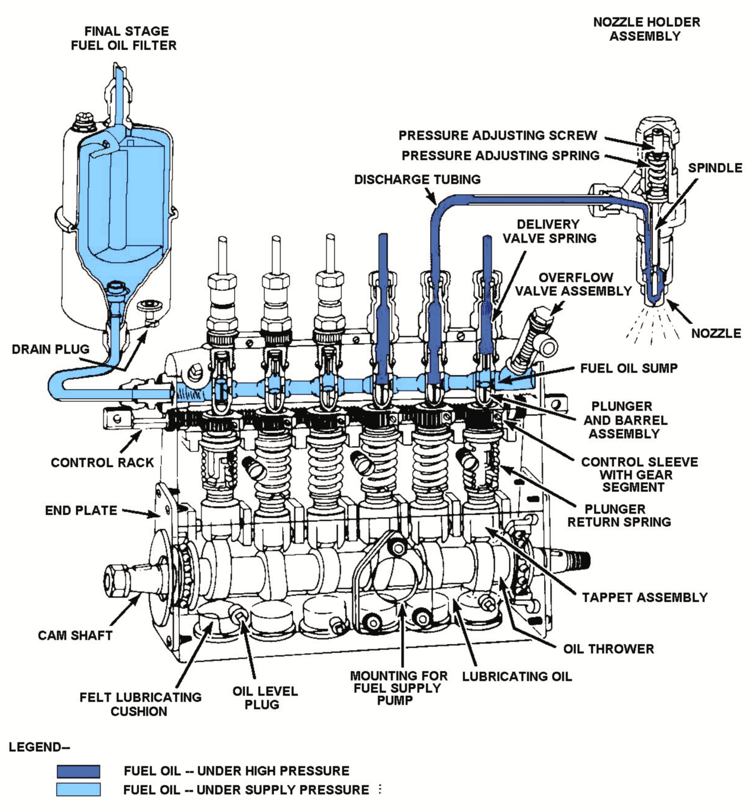
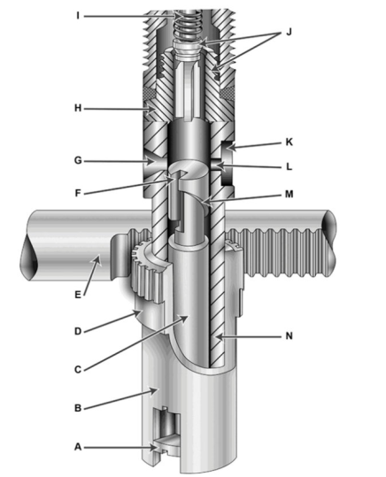
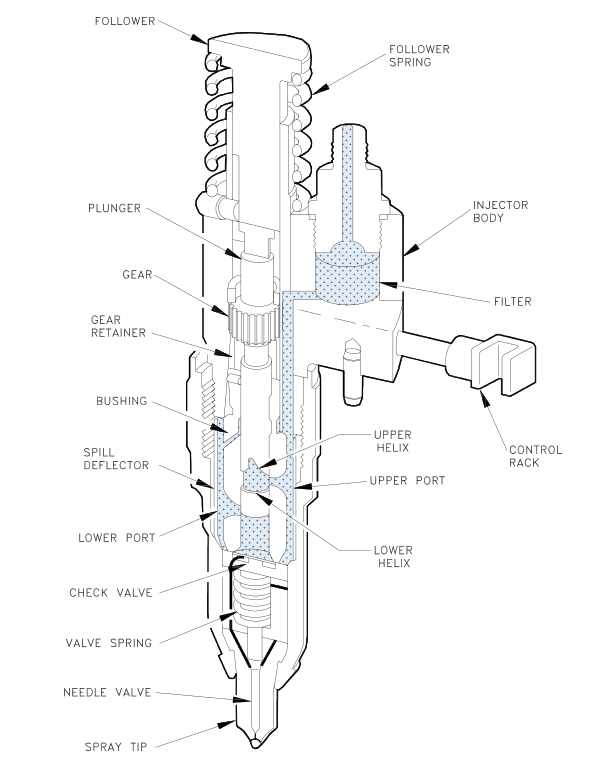

Subsection 1.5.2 Fuel Injection System
Although there are several types of fuel injection systems in use, their functions are the same. The primary function of a fuel injection system is to deliver fuel to the cylinders at the proper time and in the proper quantity, under various engine loads and speeds.
The fuel injection system may be of the mechanical (solid) type or electronic with the aid of a engine control module (computer).
Mechanical injection systems may be divided into two main groups: (1) common-rail, (2) individual pump or jerk type.
Common Rail System.
The basic common-rail system consists of a high-pressure pump which discharges very high-pressure fuel into a common rail, or header, to which each fuel injector is connected by tubing. A spring-loaded bypass valve on the header maintains a constant pressure in the system, returning all excess fuel to the fuel supply tank. The fuel injectors are operated mechanically, and or electrically by the engine computer which controls the amount of diesel fuel oil injected into the cylinder at each power stroke by the lift of the needle valve in the injector. The principal parts of a basic common-rail system are shown in figure below.

Individual Pump Injection System.
Individual-pump injection systems of the original jerk pump, or basic, type include high-pressure pumps and pressure-operated nozzles which are separate units. In some engines, only one pump and nozzle are provided for each cylinder. In other engines, such as the Fairbanks Morse, each cylinder is provided with two pumps and two nozzles.
Type APF.
Type APF pumps are of single-cylinder design, the plunger pump for each cylinder being in a separate housing. In a 6-cylinder engine, for example, there are six separate APF pumps. Each pump is cam-driven and regulated by an individual control rack.

Type APE.
Type APE pumps are assembled with all the individual cylinder plungers in a single housing. The left side of Figure 1.5.4 shows the pump assembly for a 6-cylinder engine. The injection pumps are operated from a single camshaft in the bottom part of the housing. The cams dip into lubricating oil and brush against felt cushions at the bottom of each revolution. At the top of each revolution, the cams force the spring-loaded plungers up against the plunger spring resistance.
Each plunger moves up and down in a barrel which contains fuel oil at the supply pressure.
The plunger traps oil above it during part of the upward stroke and forces it through the delivery valve and· high pressure tubing to the injector nozzle, where it is injected into the combustion chamber. The action of the plunger, control rack, delivery valve, and injector nozzle are the same in both APE and APF types of pumps.
By studying Figure 1.5.4 , you can obtain a better understanding of the fuel injection mechanism and the control of the amount of fuel injected. The fuel oil sump is filled with clean oil from the supply pump and fuel oil filter. Oil enters the barrel above the plunger through a pair of ports. The amount of fuel forced out through the injector nozzle of each upward stroke of the plunger depends on how the plunger is rotated. In Figure 1.5.4 , notice that the control rack has teeth all along the side, meshing with a gear segment on each pump. Lengthwise movement of the control rack rotates all the plungers the same amount and in the same direction.

Rotation of the plungers changes the part of the plunger helix that passes over the spill port (on the right side of each barrel in Figure 1.5.4 ), thus changing the time at which injection ends.
Operating Principle.
The pumping principle of the Bosch pump is illustrated by Figure 1.5.5 , in which four steps of a pumping stroke are shown.
In Figure 1.5.5.(a) , the plunger is below the inlet and spill ports. Fuel oil enters the barrel, as indicated by the small arrows, and fills the barrel chamber (between the plunger and the delivery valve). The plunger has a flat top, and the two ports are set at the same level. The two ports are closed by the plunger at exactly the same moment the plunger travels upward.
In Figure 1.5.5.(b) , the ports have just closed. The fuel above the plunger is trapped and placed under high pressure by the rising plunger. The pressure forces the delivery valve open at once, allowing the high-pressure oil to go to the spray nozzle.
In Figure 1.5.5.(c) , the plunger is in the effective part of its stroke with both ports closed. Fuel is passing through the delivery valve to the spray nozzle. The effective stroke will continue as long as both ports remain covered by the plunger.
In Figure 1.5.5.(d) , the moment that the spill port is uncovered by the edge of the helix causing fuel injection to end. As soon as the port is opened, the fuel oil above the plunger flows out through the vertical slot in the plunger and goes to the low-pressure fuel oil sump. Thus, the pressure above the plunger is released and the delivery valve is returned to its seat by the valve spring.
Fuel Metering.
The effect of ·plunger rotation on fuel delivery is shown in figure Figure 1.5.6 . In figures A, the plunger is rotated to bring the vertical slot to the edge of the inlet port, which is the setting for maximum delivery. In this plunger position, the lowest part of the helix is in line with the spill port, allowing the longest possible effective stroke before the spill port is uncovered, ending the injection of fuel. Figure B show the setting for medium or normal delivery. This brings a higher part of the helix in line with the spill port and leaves a short effective stroke before the spill port is uncovered.

Figure C shows the position of “no fuel delivery” , which is reached when the plunger has been rotated to bring the vertical slot in line with the spill port. In this plunger position, the fuel above the plunger will not be under compression during any part of the upward stroke.
The amount of fuel injected can be regulated by setting the plunger in any position between no delivery and maximum delivery. The plunger setting is controlled by the position of the control rack, which regulates all the plungers at the same time. Movement of the control rack, either manually or by governor action rotates the plunger and varies the quantity of fuel delivered by the pump.
Figure Figure 1.5.7 illustrates a cutaway view of the Bosch injection pump and control rack assembly. The gear segment is secured to the control sleeve, which is free to rotate on the stationary barrel. The control sleeve has a slot at the bottom into which fits the plunger flange. The flange moves in the slot as the plunger moves up and down. When the control rack is moved lengthwise, the gear segment and the control sleeve rotate around the outside of the barrel. The plunger flange and the plunger (inside the barrel) follow the rotation of the control sleeve.

The Bosch plunger, shown in figures Figure 1.5.6–1.5.8 , has a flat top surface and has only a lower helix. With this type of plunger, fuel injection will always begin at the same point in the piston cycle, whether it is set for light load or heavy load. Injection begins when the ports are closed; the end of injection can be varied by plunger rotation. This type of plunger is used in pumps marked "Timed for port closing." Injection has a constant beginning and variable ending.
Unit Injectors.
When a high pressure pump and an injection nozzle are combined into one piece, the combination is called a Unit Injector system. This type of unit is commonly used in Detroit engines
